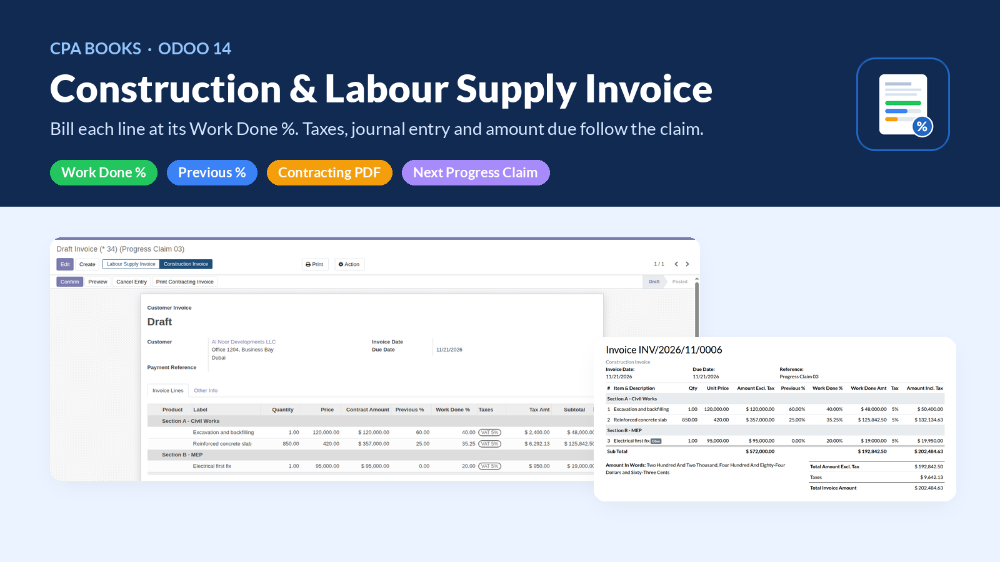
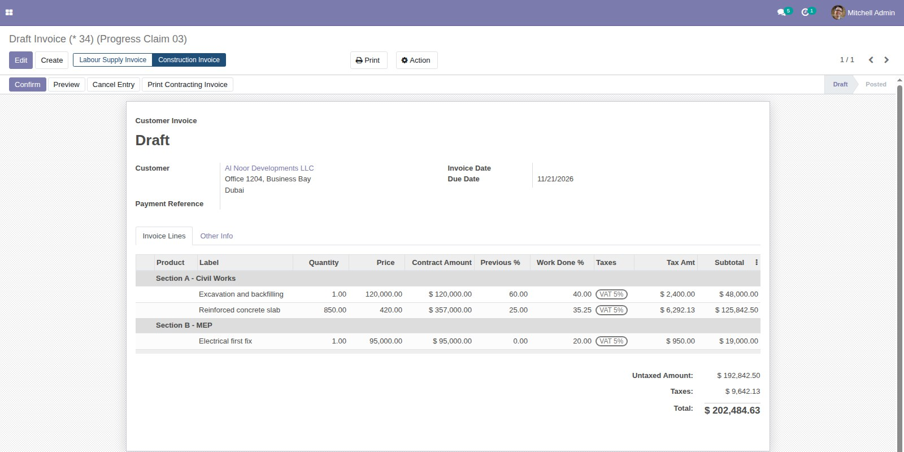
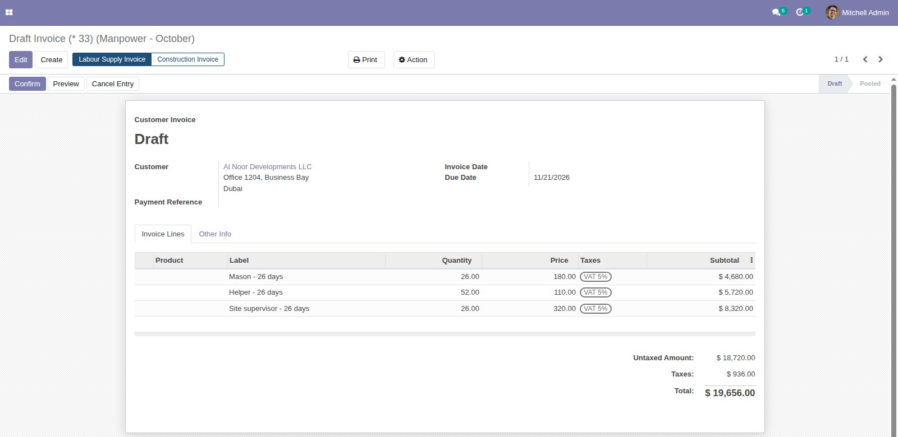
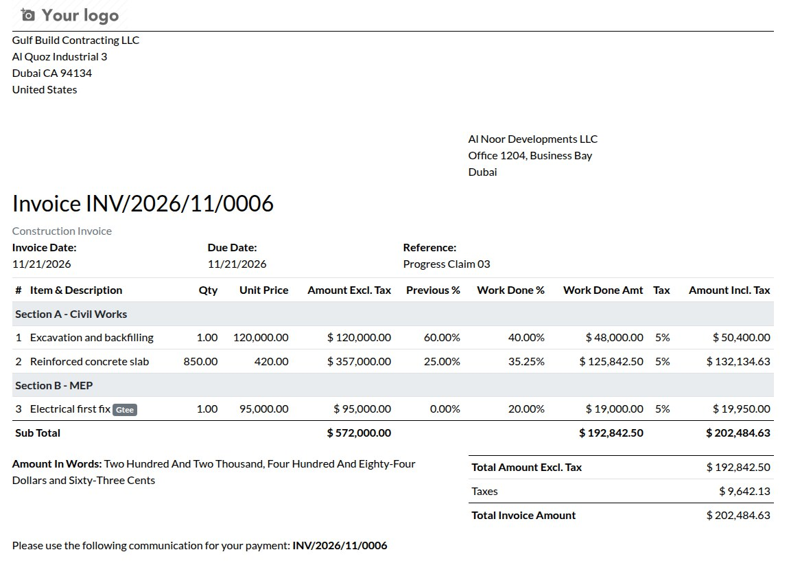
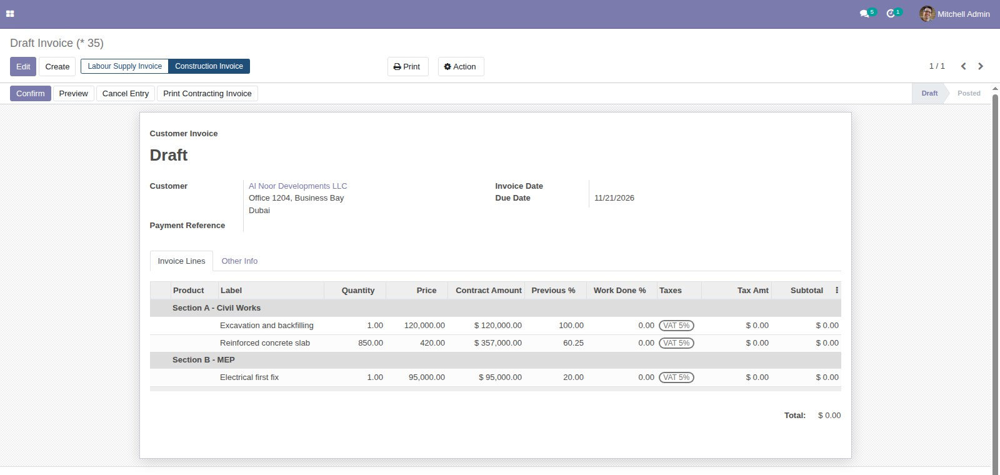
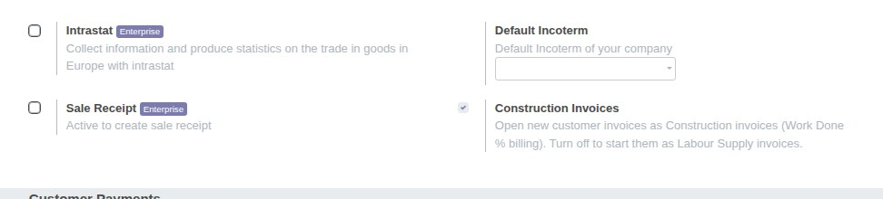

<div style="font-family:-apple-system,BlinkMacSystemFont,'Segoe UI',Roboto,Helvetica,Arial,sans-serif;color:#14213D;background-color:#FFFFFF;padding:8px 4px 24px;line-height:1.55;">
<div style="max-width:1120px;margin:0 auto;">

<!-- ============ HERO ============ -->
<div style="background-color:#102A52;border-radius:22px;padding:30px 30px 26px;margin:0 0 22px;">
<table width="100%" cellpadding="0" cellspacing="0" style="border-collapse:collapse;"><tr>
<td valign="middle">
<div style="font-size:13px;font-weight:800;color:#93C5FD;letter-spacing:1.5px;margin:0 0 6px;">CPA BOOKS · ODOO 19 · ACCOUNTING</div>
<div style="font-size:34px;line-height:1.15;font-weight:800;color:#FFFFFF;margin:0 0 10px;">Construction &amp; Labour Supply Invoice</div>
<div style="font-size:17px;color:#D6E6FF;max-width:720px;margin:0 0 16px;">Progress billing for contractors on the standard Odoo customer invoice. Enter the <b style="color:#FFFFFF;">Work Done %</b> of each line. The invoice total, taxes, journal entry and amount due all follow that claim.</div>
<span style="display:inline-block;background-color:#22C55E;color:#FFFFFF;border-radius:999px;padding:6px 14px;font-size:13px;font-weight:700;margin:3px 4px 3px 0;">Work Done %</span><span style="display:inline-block;background-color:#3B82F6;color:#FFFFFF;border-radius:999px;padding:6px 14px;font-size:13px;font-weight:700;margin:3px 4px;">Previous %</span><span style="display:inline-block;background-color:#F59E0B;color:#FFFFFF;border-radius:999px;padding:6px 14px;font-size:13px;font-weight:700;margin:3px 4px;">Contracting Invoice PDF</span><span style="display:inline-block;background-color:#8B5CF6;color:#FFFFFF;border-radius:999px;padding:6px 14px;font-size:13px;font-weight:700;margin:3px 4px;">Next Progress Claim</span>
</td>
<td width="150" valign="middle" align="right"></td>
</tr></table>
</div>



<!-- ============ PROBLEM ============ -->
<div style="background-color:#EAF3FF;border-radius:18px;padding:22px 26px;margin:0 0 30px;">
<div style="font-size:22px;font-weight:800;color:#102A52;margin:0 0 6px;">Contract value on the line, <span style="color:#2166C1;">claim on the invoice</span></div>
<div style="font-size:15px;color:#334155;">A contractor bills the same BOQ again and again: 30 % this month, 25 % next month. With this app the line keeps the full contract quantity and price, and you only type the percentage done. The posted invoice, VAT, receivable and payments are for the claimed amount, not for the full contract.</div>
</div>

<!-- ============ FEATURE 1 ============ -->
<div style="margin:0 0 12px;font-size:13px;font-weight:800;color:#2166C1;letter-spacing:1.2px;">CONSTRUCTION INVOICE</div>
<div style="font-size:26px;font-weight:800;color:#102A52;margin:0 0 8px;">Previous % and Work Done % <span style="color:#2166C1;">on every line</span></div>
<div style="font-size:15px;color:#475569;margin:0 0 14px;">Switch the invoice to <b>Construction Invoice</b> from the control panel. The lines show Contract Amount, Previous %, Work Done % and Tax Amt. Subtotal and the invoice totals are the Work Done amount.</div>


<!-- ============ FEATURE 2 ============ -->
<div style="background-color:#F2EDFF;border-radius:18px;padding:24px 24px 8px;margin:0 0 34px;">
<div style="margin:0 0 12px;font-size:13px;font-weight:800;color:#7C3AED;letter-spacing:1.2px;">LABOUR SUPPLY INVOICE</div>
<div style="font-size:26px;font-weight:800;color:#102A52;margin:0 0 8px;">One click back to a <span style="color:#7C3AED;">standard invoice</span></div>
<div style="font-size:15px;color:#475569;margin:0 0 14px;">Manpower and labour supply bills use the normal quantity x price lines. The contracting columns are hidden and the line discount works as usual. The switch is available on draft customer invoices and credit notes.</div>

</div>

<!-- ============ FEATURE 3 ============ -->
<div style="margin:0 0 12px;font-size:13px;font-weight:800;color:#2166C1;letter-spacing:1.2px;">PRINT</div>
<div style="font-size:26px;font-weight:800;color:#102A52;margin:0 0 8px;">Contracting Invoice <span style="color:#2166C1;">PDF</span></div>
<div style="font-size:15px;color:#475569;margin:0 0 14px;">Print &gt; Contracting Invoice (or the button on the invoice) prints Qty, Unit Price, Amount Excl. Tax, Previous %, Work Done %, Work Done Amt, Tax and Amount Incl. Tax, with sections, a sub total row, tax groups and the amount in words. It uses your company's standard Odoo document layout.</div>
<table width="100%" cellpadding="0" cellspacing="0" style="border-collapse:collapse;margin:0 0 34px;"><tr>
<td width="62%" valign="top" style="padding:0 14px 0 0;"></td>
<td valign="top">
<div style="border:2px solid #E7EEF5;border-radius:16px;padding:14px 16px;margin:0 0 10px;"><div style="font-size:15px;font-weight:800;color:#102A52;">Full contract and claim side by side</div><div style="font-size:13px;color:#64748B;">Amount Excl. Tax shows the full line value, Work Done Amt shows this claim.</div></div>
<div style="border:2px solid #E7EEF5;border-radius:16px;padding:14px 16px;margin:0 0 10px;"><div style="font-size:15px;font-weight:800;color:#102A52;">Totals that match the books</div><div style="font-size:13px;color:#64748B;">Total Amount Excl. Tax, taxes and Total Invoice Amount are the posted invoice amounts.</div></div>
<div style="border:2px solid #E7EEF5;border-radius:16px;padding:14px 16px;margin:0 0 10px;"><div style="font-size:15px;font-weight:800;color:#102A52;">Guarantee items</div><div style="font-size:13px;color:#64748B;">Lines marked Gtee get a badge on the PDF.</div></div>
<div style="border:2px solid #E7EEF5;border-radius:16px;padding:14px 16px;"><div style="font-size:15px;font-weight:800;color:#102A52;">Labour Supply layout</div><div style="font-size:13px;color:#64748B;">On a Labour Supply invoice the percentage columns are left out.</div></div>
</td>
</tr></table>

<!-- ============ FEATURE 4 ============ -->
<div style="background-color:#EEF6FF;border-radius:18px;padding:24px 24px 8px;margin:0 0 34px;">
<div style="margin:0 0 12px;font-size:13px;font-weight:800;color:#2166C1;letter-spacing:1.2px;">NEXT CLAIM</div>
<div style="font-size:26px;font-weight:800;color:#102A52;margin:0 0 8px;">Next Progress Claim <span style="color:#2166C1;">in one click</span></div>
<div style="font-size:15px;color:#475569;margin:0 0 14px;">On a posted Construction invoice, <b>Next Progress Claim</b> creates the next draft invoice with the same lines. Previous % becomes Previous % + Work Done %, and Work Done % starts at 0, ready for this period's figures.</div>

</div>

<!-- ============ FEATURE 5 ============ -->
<div style="margin:0 0 12px;font-size:13px;font-weight:800;color:#2166C1;letter-spacing:1.2px;">SETTINGS</div>
<div style="font-size:26px;font-weight:800;color:#102A52;margin:0 0 8px;">Choose the <span style="color:#2166C1;">default per company</span></div>
<div style="font-size:15px;color:#475569;margin:0 0 14px;">Invoicing &gt; Configuration &gt; Settings &gt; Construction Invoices. When it is on, new customer invoices open as Construction invoices. Turn it off if most of your invoices are labour supply.</div>


<!-- ============ KEY FEATURES ============ -->
<div style="text-align:center;font-size:26px;font-weight:800;color:#102A52;margin:0 0 4px;">Key features</div>
<div style="text-align:center;font-size:15px;color:#64748B;margin:0 0 16px;">Everything runs on the standard Odoo invoice.</div>
<table width="100%" cellpadding="0" cellspacing="0" style="border-collapse:separate;margin:0 0 34px;">
<tr>
<td width="33%" valign="top" style="padding:6px;"><div style="border:1px solid #E2E8F0;border-radius:16px;padding:18px;box-shadow:0 4px 14px rgba(16,42,82,0.06);"><div style="display:inline-block;background-color:#DCFCE7;border-radius:12px;padding:6px 10px;font-weight:800;color:#15803D;margin:0 0 8px;">%</div><div style="font-size:16px;font-weight:800;color:#102A52;">Exact amounts</div><div style="font-size:13px;color:#64748B;">35.25 % of 500,000.00 posts 176,250.00. No rounding of quantities.</div></div></td>
<td width="33%" valign="top" style="padding:6px;"><div style="border:1px solid #E2E8F0;border-radius:16px;padding:18px;box-shadow:0 4px 14px rgba(16,42,82,0.06);"><div style="display:inline-block;background-color:#DBEAFE;border-radius:12px;padding:6px 10px;font-weight:800;color:#1D4ED8;margin:0 0 8px;">VAT</div><div style="font-size:16px;font-weight:800;color:#102A52;">Correct tax</div><div style="font-size:13px;color:#64748B;">Taxes are computed by Odoo on the Work Done amount, so VAT reports follow the claim.</div></div></td>
<td width="33%" valign="top" style="padding:6px;"><div style="border:1px solid #E2E8F0;border-radius:16px;padding:18px;box-shadow:0 4px 14px rgba(16,42,82,0.06);"><div style="display:inline-block;background-color:#EDE9FE;border-radius:12px;padding:6px 10px;font-weight:800;color:#6D28D9;margin:0 0 8px;">Dr/Cr</div><div style="font-size:16px;font-weight:800;color:#102A52;">Balanced journal entry</div><div style="font-size:13px;color:#64748B;">Receivable, income and tax lines equal the printed total. Payments reconcile normally.</div></div></td>
</tr>
<tr>
<td width="33%" valign="top" style="padding:6px;"><div style="border:1px solid #E2E8F0;border-radius:16px;padding:18px;box-shadow:0 4px 14px rgba(16,42,82,0.06);"><div style="display:inline-block;background-color:#FFEDD5;border-radius:12px;padding:6px 10px;font-weight:800;color:#C2410C;margin:0 0 8px;">−%</div><div style="font-size:16px;font-weight:800;color:#102A52;">Line discount kept</div><div style="font-size:13px;color:#64748B;">A commercial discount stays on the line (Line Disc.%) and is combined with Work Done %.</div></div></td>
<td width="33%" valign="top" style="padding:6px;"><div style="border:1px solid #E2E8F0;border-radius:16px;padding:18px;box-shadow:0 4px 14px rgba(16,42,82,0.06);"><div style="display:inline-block;background-color:#CCFBF1;border-radius:12px;padding:6px 10px;font-weight:800;color:#0F766E;margin:0 0 8px;">SO</div><div style="font-size:16px;font-weight:800;color:#102A52;">Works with Sales</div><div style="font-size:13px;color:#64748B;">Invoices created from sales orders open at 100 % Work Done with their discount intact.</div></div></td>
<td width="33%" valign="top" style="padding:6px;"><div style="border:1px solid #E2E8F0;border-radius:16px;padding:18px;box-shadow:0 4px 14px rgba(16,42,82,0.06);"><div style="display:inline-block;background-color:#FCE7F3;border-radius:12px;padding:6px 10px;font-weight:800;color:#BE185D;margin:0 0 8px;">✓</div><div style="font-size:16px;font-weight:800;color:#102A52;">Safe on posted invoices</div><div style="font-size:13px;color:#64748B;">The Labour / Construction switch is locked once the invoice is posted. Percentages are checked to stay within 0–100.</div></div></td>
</tr>
</table>

<!-- ============ HOW IT WORKS ============ -->
<div style="background-color:#F7F4FF;border-radius:18px;padding:24px;margin:0 0 34px;">
<div style="text-align:center;font-size:26px;font-weight:800;color:#102A52;margin:0 0 16px;">How it works</div>
<table width="100%" cellpadding="0" cellspacing="0" style="border-collapse:separate;"><tr>
<td width="25%" valign="top" style="padding:6px;"><div style="background-color:#FFFFFF;border-radius:16px;padding:16px;"><div style="display:inline-block;background-color:#2166C1;color:#FFFFFF;border-radius:999px;width:30px;height:30px;line-height:30px;text-align:center;font-weight:800;margin:0 0 8px;">1</div><div style="font-size:15px;font-weight:800;color:#102A52;">Create the invoice</div><div style="font-size:13px;color:#64748B;">Pick Construction Invoice and add the contract lines: quantity and unit price.</div></div></td>
<td width="25%" valign="top" style="padding:6px;"><div style="background-color:#FFFFFF;border-radius:16px;padding:16px;"><div style="display:inline-block;background-color:#2166C1;color:#FFFFFF;border-radius:999px;width:30px;height:30px;line-height:30px;text-align:center;font-weight:800;margin:0 0 8px;">2</div><div style="font-size:15px;font-weight:800;color:#102A52;">Enter the progress</div><div style="font-size:13px;color:#64748B;">Fill Previous % and Work Done % per line. Totals update at once.</div></div></td>
<td width="25%" valign="top" style="padding:6px;"><div style="background-color:#FFFFFF;border-radius:16px;padding:16px;"><div style="display:inline-block;background-color:#2166C1;color:#FFFFFF;border-radius:999px;width:30px;height:30px;line-height:30px;text-align:center;font-weight:800;margin:0 0 8px;">3</div><div style="font-size:15px;font-weight:800;color:#102A52;">Post and print</div><div style="font-size:13px;color:#64748B;">Confirm the invoice and print the Contracting Invoice PDF.</div></div></td>
<td width="25%" valign="top" style="padding:6px;"><div style="background-color:#FFFFFF;border-radius:16px;padding:16px;"><div style="display:inline-block;background-color:#2166C1;color:#FFFFFF;border-radius:999px;width:30px;height:30px;line-height:30px;text-align:center;font-weight:800;margin:0 0 8px;">4</div><div style="font-size:15px;font-weight:800;color:#102A52;">Next claim</div><div style="font-size:13px;color:#64748B;">Click Next Progress Claim next month. Previous % is filled for you.</div></div></td>
</tr></table>
</div>

<!-- ============ GOOD TO KNOW ============ -->
<div style="border:2px solid #E7EEF5;border-radius:18px;padding:20px 24px;margin:0 0 34px;">
<div style="font-size:20px;font-weight:800;color:#102A52;margin:0 0 8px;">Good to know</div>
<div style="font-size:14px;color:#475569;margin:0 0 6px;">• Work Done % is applied through Odoo's own line discount: discount = 100 − (100 − Line Disc.%) × Work Done % / 100. On a Construction invoice the standard Disc.% column is therefore hidden; use Line Disc.% for a commercial discount.</div>
<div style="font-size:14px;color:#475569;margin:0 0 6px;">• Odoo's default invoice print shows that combined discount. Use the Contracting Invoice print for customers.</div>
<div style="font-size:14px;color:#475569;">• Construction mode is for customer invoices and credit notes. Vendor bills are not changed.</div>
</div>

<!-- ============ COMPATIBILITY ============ -->
<table width="100%" cellpadding="0" cellspacing="0" style="border-collapse:separate;margin:0 0 34px;"><tr>
<td width="50%" valign="top" style="padding:6px;"><div style="background-color:#EAF3FF;border-radius:18px;padding:20px;">
<div style="font-size:20px;font-weight:800;color:#102A52;margin:0 0 8px;">Compatibility</div>
<div style="font-size:14px;color:#475569;margin:0 0 4px;"><b>Odoo version:</b> 14.0</div>
<div style="font-size:14px;color:#475569;margin:0 0 4px;"><b>Tested on:</b> Odoo 19 Community</div>
<div style="font-size:14px;color:#475569;"><b>Depends on:</b> Invoicing / Accounting (<code>account</code>) only. No other CPA Books module is needed.</div>
</div></td>
<td width="50%" valign="top" style="padding:6px;"><div style="background-color:#102A52;border-radius:18px;padding:20px;">
<div style="font-size:20px;font-weight:800;color:#FFFFFF;margin:0 0 8px;">Support</div>
<div style="font-size:14px;color:#D6E6FF;margin:0 0 4px;">CPA Books technical support</div>
<div style="font-size:14px;color:#D6E6FF;margin:0 0 4px;">Email: <a href="mailto:info@cpabooks.org" style="color:#93C5FD;">info@cpabooks.org</a></div>
<div style="font-size:14px;color:#D6E6FF;">Web: <a href="https://www.cpabooks.org" style="color:#93C5FD;">www.cpabooks.org</a></div>
</div></td>
</tr></table>

</div>
</div>
